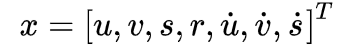
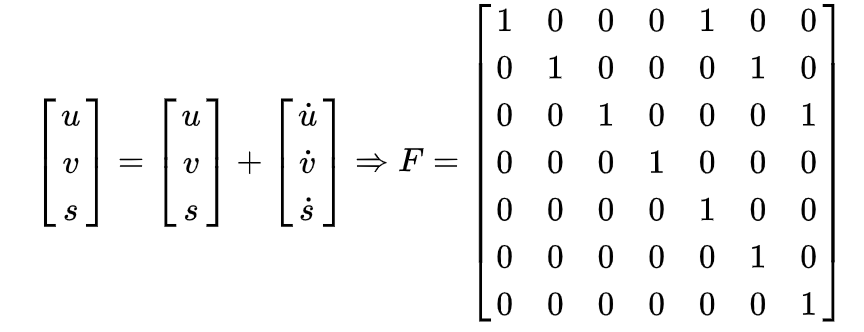
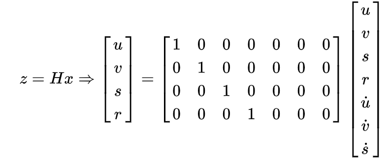

4.4. 目标估计模型-卡尔曼滤波
学习目标
- 了解卡尔曼滤波器中的状态变量和观测输入
- 了解目标框的状态更新向量
- 了解预测边界框的估计
在这里我们主要完成卡尔曼滤波器进行跟踪的相关内容的实现。
- 初始化：卡尔曼滤波器的状态变量和观测输入
- 更新状态变量
- 根据状态变量预测目标的边界框
初始化：
状态量x的设定是一个七维向量：

分别表示目标中心位置的x,y坐标，面积s和当前目标框的纵横比，最后三个则是横向，纵向，面积的变化速率，其中速度部分初始化为0，其他根据观测进行输入。
初始化卡尔曼滤波器参数，7个状态变量和4个观测输入，运动形式和转换矩阵的确定都是基于匀速运动模型，状态转移矩阵F根据运动学公式确定：

量测矩阵H是4*7的矩阵，将观测值与状态变量相对应：

以及相应的协方差参数的设定，根据经验值进行设定。

def __init__(self, bbox):
# 定义等速模型
# 内部使用KalmanFilter，7个状态变量和4个观测输入
self.kf = KalmanFilter(dim_x=7, dim_z=4)
# F是状态变换模型，为7*7的方阵
self.kf.F = np.array(
[[1, 0, 0, 0, 1, 0, 0], [0, 1, 0, 0, 0, 1, 0], [0, 0, 1, 0, 0, 0, 1], [0, 0, 0, 1, 0, 0, 0],
[0, 0, 0, 0, 1, 0, 0], [0, 0, 0, 0, 0, 1, 0], [0, 0, 0, 0, 0, 0, 1]])
# H是量测矩阵，是4*7的矩阵
self.kf.H = np.array(
[[1, 0, 0, 0, 0, 0, 0], [0, 1, 0, 0, 0, 0, 0], [0, 0, 1, 0, 0, 0, 0], [0, 0, 0, 1, 0, 0, 0]])
# R是测量噪声的协方差，即真实值与测量值差的协方差
self.kf.R[2:, 2:] *= 10.
# P是先验估计的协方差
self.kf.P[4:, 4:] *= 1000. # give high uncertainty to the unobservable initial velocities
self.kf.P *= 10.
# Q是过程激励噪声的协方差
self.kf.Q[-1, -1] *= 0.01
self.kf.Q[4:, 4:] *= 0.01
# 状态估计
self.kf.x[:4] = convert_bbox_to_z(bbox)
# 参数的更新
self.time_since_update = 0
self.id = KalmanBoxTracker.count
KalmanBoxTracker.count += 1
self.history = []
self.hits = 0
self.hit_streak = 0
self.age = 0
更新状态变量
使用观测到的目标框更新状态变量
def update(self, bbox):
# 重置
self.time_since_update = 0
# 清空history
self.history = []
# hits计数加1
self.hits += 1
self.hit_streak += 1
# 根据观测结果修改内部状态x
self.kf.update(convert_bbox_to_z(bbox))
进行目标框的预测
推进状态变量并返回预测的边界框结果
def predict(self):
# 推进状态变量
if (self.kf.x[6] + self.kf.x[2]) <= 0:
self.kf.x[6] *= 0.0
# 进行预测
self.kf.predict()
# 卡尔曼滤波的次数
self.age += 1
# 若过程中未更新过，将hit_streak置为0
if self.time_since_update > 0:
self.hit_streak = 0
self.time_since_update += 1
# 将预测结果追加到history中
self.history.append(convert_x_to_bbox(self.kf.x))
return self.history[-1]
整个代码如下所示：
class KalmanBoxTracker(object):
count = 0
def __init__(self, bbox):
"""
初始化边界框和跟踪器
:param bbox:
"""
# 定义等速模型
# 内部使用KalmanFilter，7个状态变量和4个观测输入
self.kf = KalmanFilter(dim_x=7, dim_z=4)
self.kf.F = np.array(
[[1, 0, 0, 0, 1, 0, 0], [0, 1, 0, 0, 0, 1, 0], [0, 0, 1, 0, 0, 0, 1], [0, 0, 0, 1, 0, 0, 0],
[0, 0, 0, 0, 1, 0, 0], [0, 0, 0, 0, 0, 1, 0], [0, 0, 0, 0, 0, 0, 1]])
self.kf.H = np.array(
[[1, 0, 0, 0, 0, 0, 0], [0, 1, 0, 0, 0, 0, 0], [0, 0, 1, 0, 0, 0, 0], [0, 0, 0, 1, 0, 0, 0]])
self.kf.R[2:, 2:] *= 10.
self.kf.P[4:, 4:] *= 1000. # give high uncertainty to the unobservable initial velocities
self.kf.P *= 10.
self.kf.Q[-1, -1] *= 0.01
self.kf.Q[4:, 4:] *= 0.01
self.kf.x[:4] = convert_bbox_to_z(bbox)
self.time_since_update = 0
self.id = KalmanBoxTracker.count
KalmanBoxTracker.count += 1
self.history = []
self.hits = 0
self.hit_streak = 0
self.age = 0
def update(self, bbox):
"""
使用观察到的目标框更新状态向量。filterpy.kalman.KalmanFilter.update 会根据观测修改内部状态估计self.kf.x。
重置self.time_since_update，清空self.history。
:param bbox:目标框
:return:
"""
self.time_since_update = 0
self.history = []
self.hits += 1
self.hit_streak += 1
self.kf.update(convert_bbox_to_z(bbox))
def predict(self):
"""
推进状态向量并返回预测的边界框估计。
将预测结果追加到self.history。由于 get_state 直接访问 self.kf.x，所以self.history没有用到
:return:
"""
if (self.kf.x[6] + self.kf.x[2]) <= 0:
self.kf.x[6] *= 0.0
self.kf.predict()
self.age += 1
if self.time_since_update > 0:
self.hit_streak = 0
self.time_since_update += 1
self.history.append(convert_x_to_bbox(self.kf.x))
return self.history[-1]
def get_state(self):
"""
返回当前边界框估计值
:return:
"""
return convert_x_to_bbox(self.kf.x)
总结
了解初始化，卡尔曼滤波器的状态变量和观测输入
更新状态变量update()
根据状态变量预测目标的边界框predict()